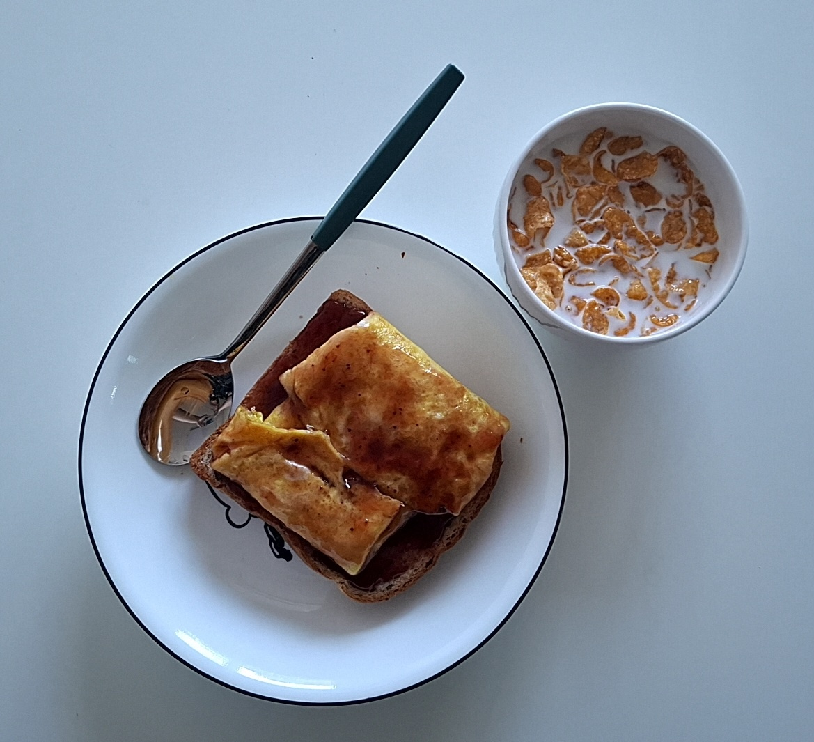
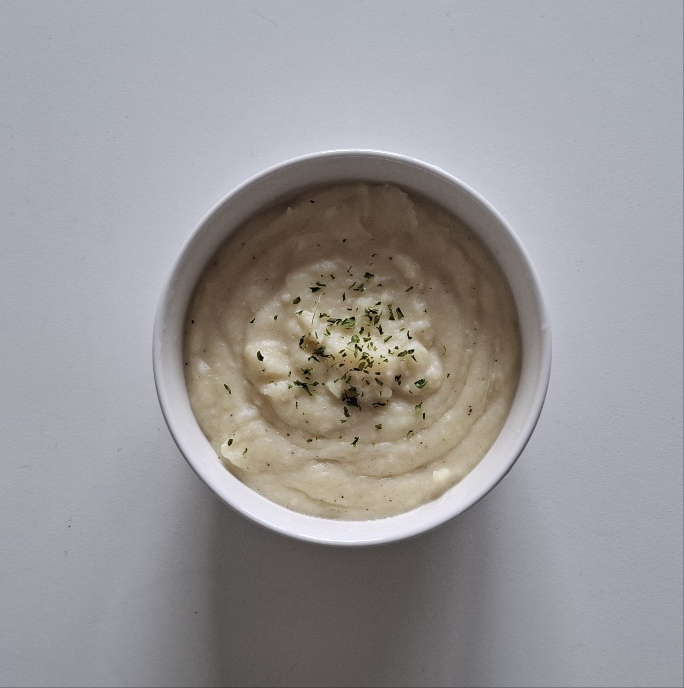
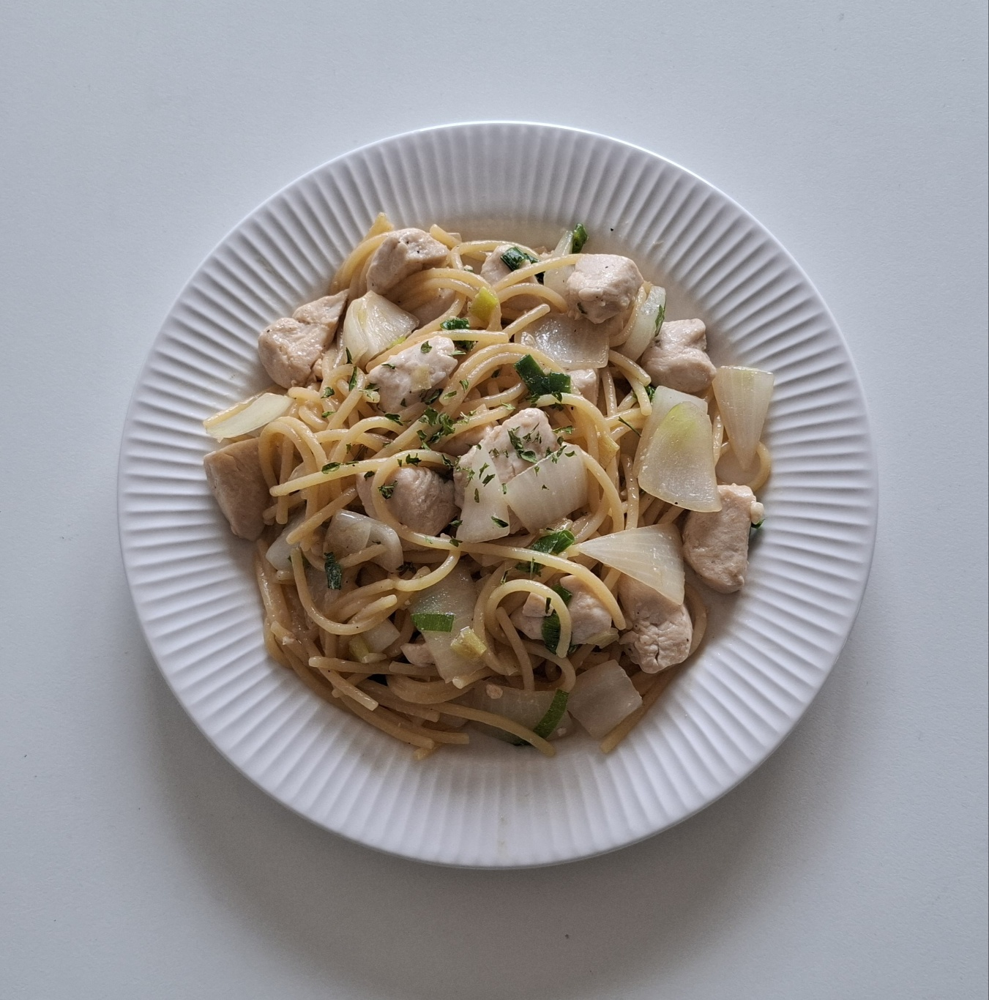
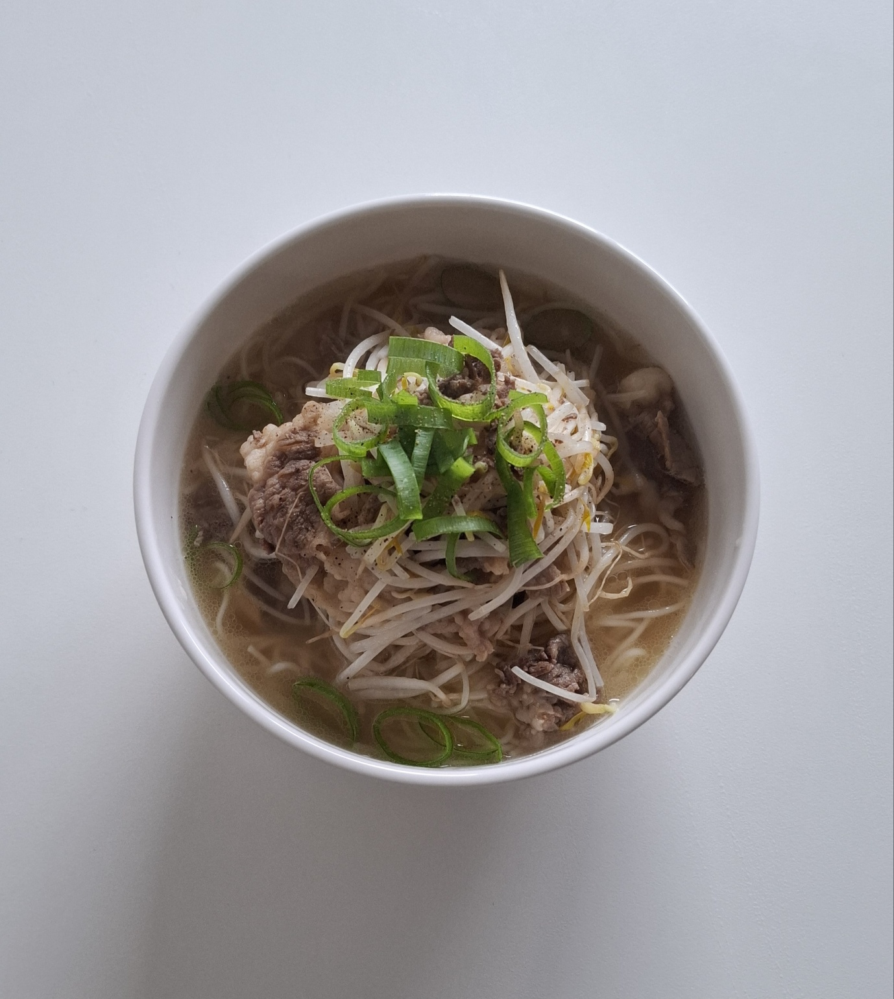

This example use media queries to re-arrange the images on different screen sizes: for screens larger than 700px wide, it will show four images side by side, for screens smaller than 700px, it will show two images side by side. For screens smaller than 500px, the images will stack vertically (100%).
You will learn more about media queries and responsive web design later in our CSS Tutorial.